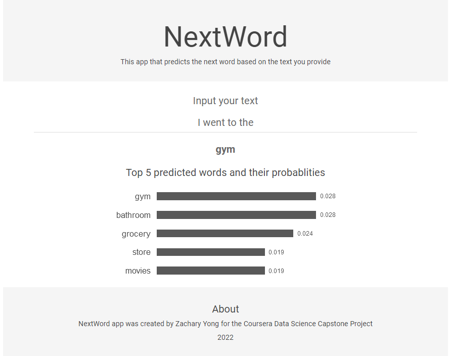
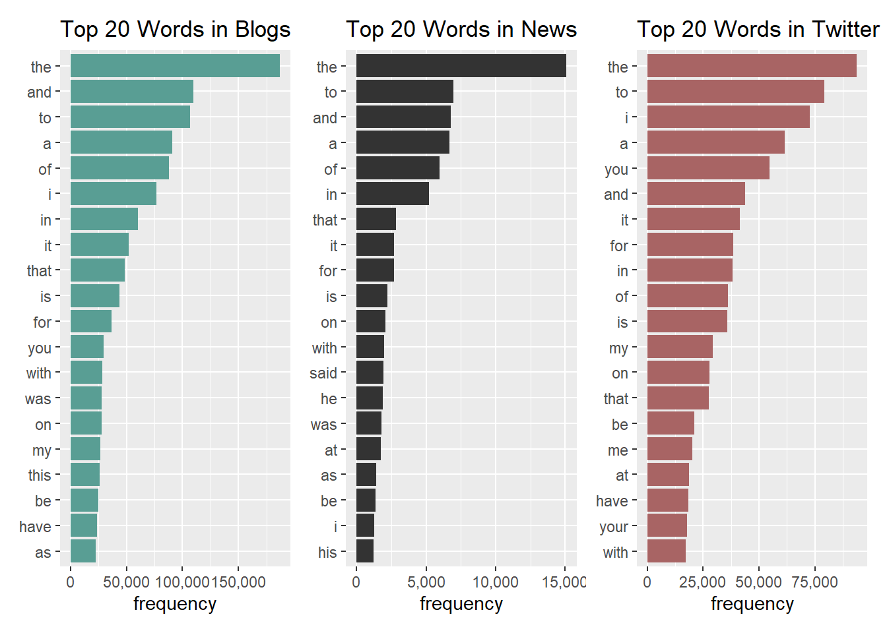
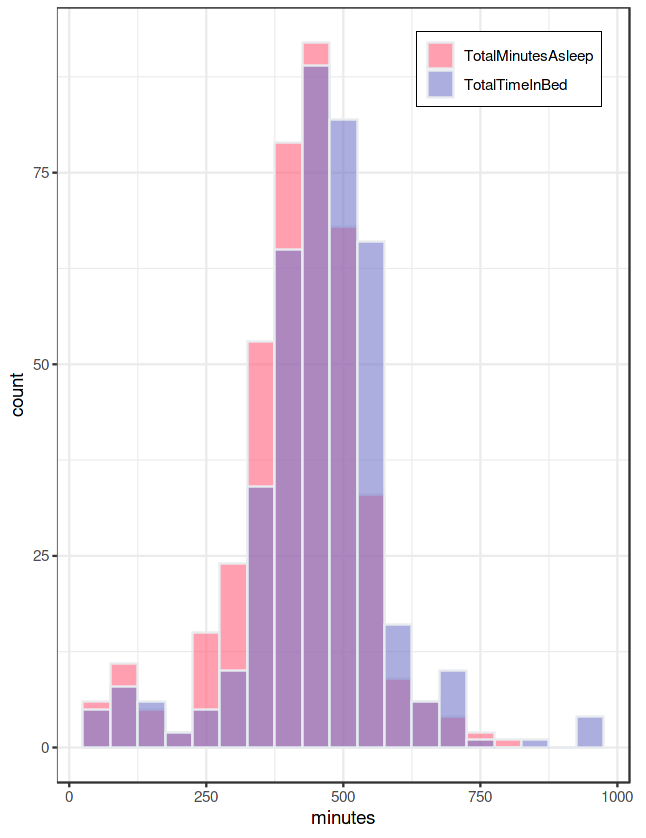
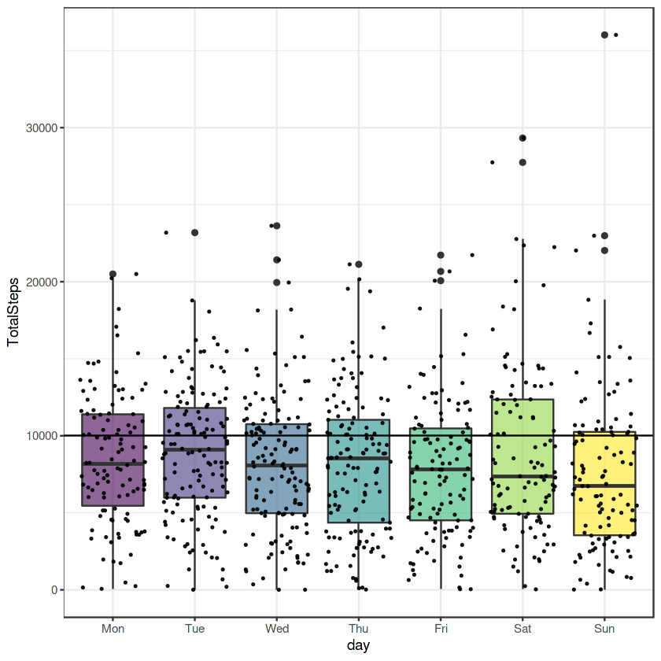
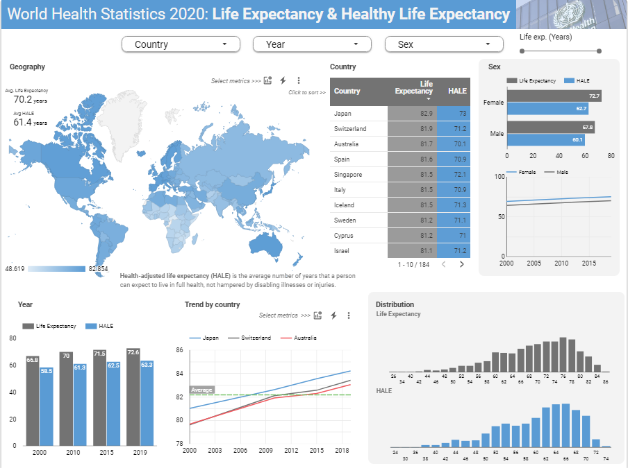
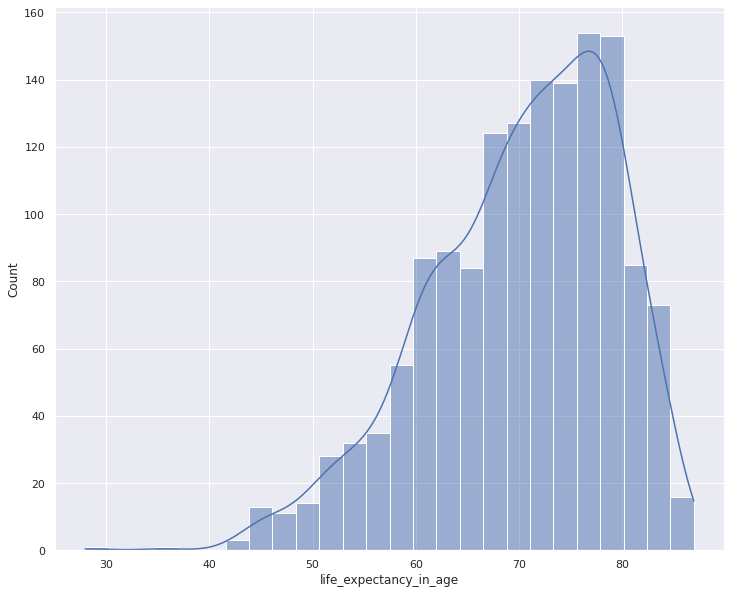
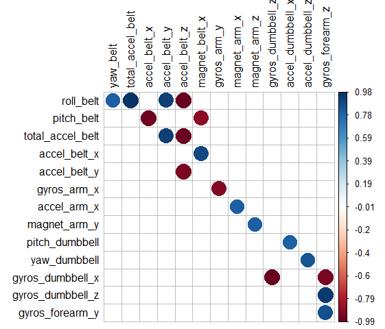
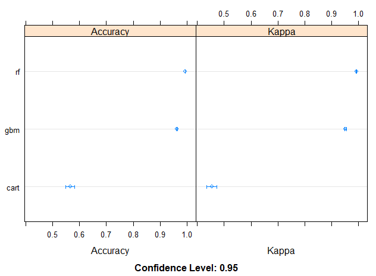
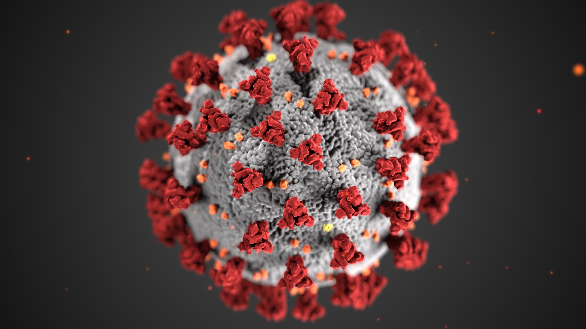
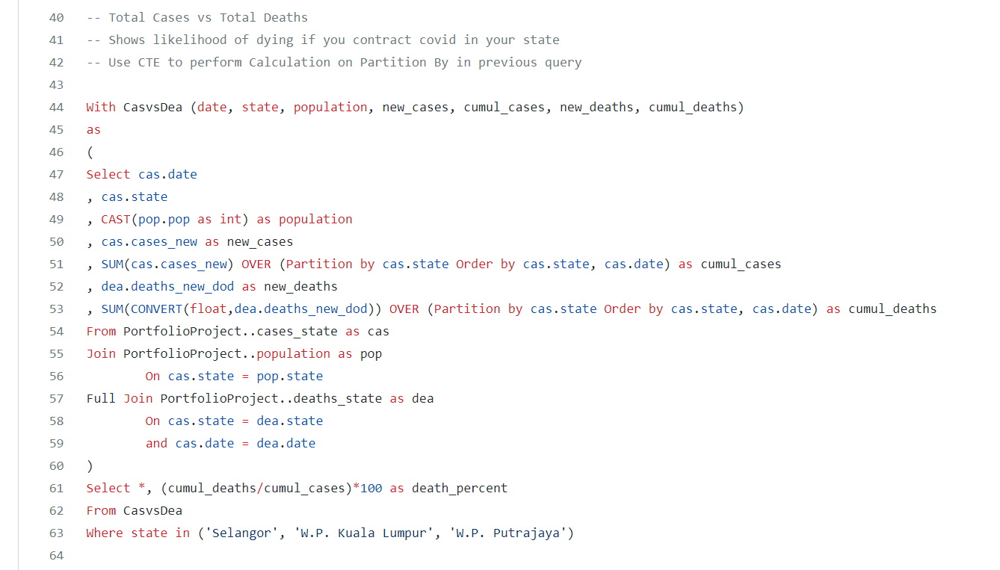

Data Science Portfolio
Hello! I’m an aspiring data scientist with a background in medical science.
1. Next Word Prediction
Created an application that can predict the next word based on text provided.
R | Shiny | NLP | Language Modeling


2. Wellness Tech Data Analysis
Prepare, process, analyze, and visualize data on how consumers use their smart devices. Then these insights are used to improve a health tracking app.
R | EDA | Data Visualization | Case Study


3. World Health Statistics
An exploration of the health statistics of the world up to 2020.
Python | EDA | Data Visualization | Data Studio | SQL


4. Predicting Weight Lifting Activity
Use data from accelerometers on the belt, forearm, arm, and dumbell to predict whether participants perform barbell lifts correctly.
R | EDA | Data Visualization | Machine Learning | Classification


5. COVID-19 Data Exploration

